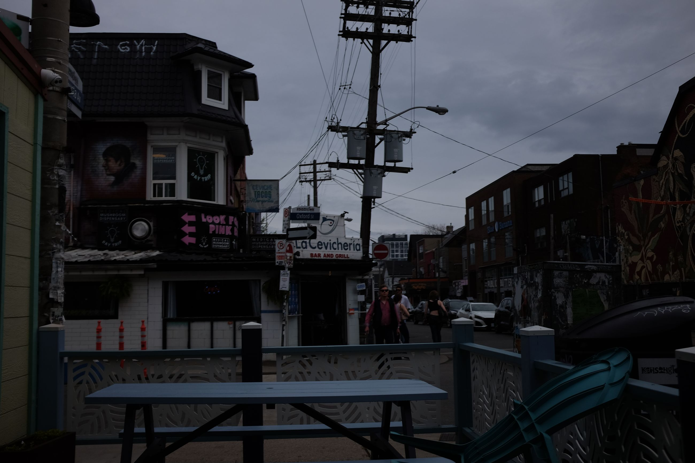

First impressions are that it is a nothing city: great for work, but bland. I don't even have any pictures of it.
Parts of it are like San Francisco (think grungy buildings -- bricked), and parts are like London (think smaller streets, adjoining neighbourhoods). Toronto is apparently the most North American of Canadian cities.
Other than that, we just hung out with friends and worked. Not much to see here in terms of attractions, but apparently a great place to live ...? Perhaps a good stepping stone to other more flavourful Canadian cities.
I took one picture of the 'Little Jamaica' market area, but used terrible lighting.
